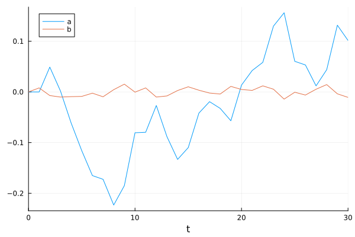
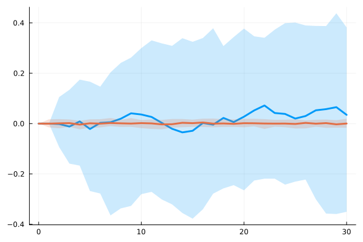
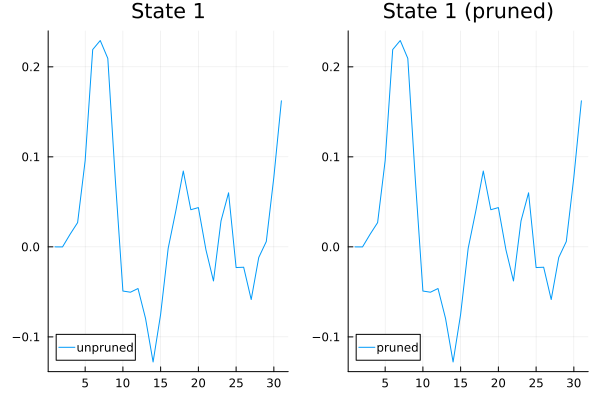

Quadratic Models
DifferenceEquations.jl supports second-order perturbation solutions through QuadraticStateSpaceProblem and PrunedQuadraticStateSpaceProblem. These extend the linear state-space model with quadratic terms:
\[u_{n+1} = A_0 + A_1 \, u_n + u_n^\top A_2 \, u_n + B \, w_{n+1}\]
with observation equation
\[z_n = C_0 + C_1 \, u_n + u_n^\top C_2 \, u_n + v_n\]
This formulation follows Andreasen, Fernandez-Villaverde, and Rubio-Ramirez (2017), "The Pruned State-Space System for Non-Linear DSGE Models: Theory and Empirical Applications."
Simulating a Quadratic Model
We define the quadratic coefficients. The tensors A_2 and C_2 are 3-dimensional arrays where A_2[i, :, :] gives the matrix for the i-th element of the quadratic form. For a 2-state model, A_2 is a 2×2×2 array: the quadratic contribution to state i is $u^\top A_2[i,:,:]\, u$. For example, A_2[1,:,:] is the 2×2 matrix whose quadratic form gives the nonlinear correction to the first state element.
using DifferenceEquations, LinearAlgebra, Random, Plots
A_0 = [-7.824904812740593e-5, 0.0]
A_1 = [0.95 6.2; 0.0 0.2]
A_2 = cat([-0.0002 0.0334; 0.0 0.0], [0.034 3.129; 0.0 0.0]; dims = 3)
B = [0.0; 0.01;;]
C_0 = [7.8e-5, 0.0]
C_1 = [0.09 0.67; 1.00 0.00]
C_2 = cat([-0.00019 0.0026; 0.0 0.0], [0.0026 0.313; 0.0 0.0]; dims = 3)
D = Diagonal([0.01, 0.01])
u0 = zeros(2)
T = 30
Random.seed!(42)
prob = QuadraticStateSpaceProblem(A_0, A_1, A_2, B, u0, (0, T);
C_0, C_1, C_2, observables_noise = D, syms = (:a, :b))
sol = solve(prob)retcode: Success
Interpolation: Piecewise constant interpolation
t: 0:1:30
u: 31-element Vector{Vector{Float64}}:
[0.0, 0.0]
[-7.824904812740593e-5, 0.007883556016042917]
[0.04891988885175858, -0.007221874756335411]
[0.0017589257528020396, -0.010182309773363343]
[-0.061214384981922526, -0.009369011599021596]
[-0.11600722245697045, -0.008895754307381123]
[-0.1651243120498138, -0.002504969541934924]
[-0.17243509703288032, -0.009630227771786251]
[-0.22320283898400928, 0.0043901627568102754]
[-0.18491763906354783, 0.01526486530847619]
⋮
[0.058305824094747605, 0.01193042589888877]
[0.12977249524792234, 0.0052839691241533]
[0.15609644165272454, -0.014251596803596712]
[0.0603341824604796, -0.0006663062536166405]
[0.05310607708731666, -0.006224420214619914]
[0.011879503547645217, 0.005244589569794043]
[0.043813971057767936, 0.014407612549804024]
[0.13156389952858036, -0.003777682906262093]
[0.10149351503106013, -0.01081151648500947]The solution has the same structure as the linear case: sol.u holds the state trajectory, sol.z holds observations, and sol.W holds the noise sequence – all as Vector{Vector}.
Plotting and Ensembles
The standard plotting recipes work identically:
plot(sol)
Ensemble simulations follow the same SciML interface:
using DiffEqBase
prob_ens = QuadraticStateSpaceProblem(A_0, A_1, A_2, B, u0, (0, T);
C_0, C_1, C_2, observables_noise = D, syms = (:a, :b))
ensemble_sol = solve(EnsembleProblem(prob_ens), DirectIteration(), EnsembleThreads();
trajectories = 50)
summ = EnsembleSummary(ensemble_sol)
plot(summ)
Joint Likelihood
When both noise and observables are provided, the solver computes the joint log-likelihood conditioned on the noise realization. As with linear models, observables correspond to $z_1, \ldots, z_T$, so we pass sol.z[2:end].
observables = sol.z[2:end] # Vector{Vector}, length T
noise = sol.W # Vector{Vector}, length T
prob_lik = QuadraticStateSpaceProblem(A_0, A_1, A_2, B, u0, (0, length(observables));
C_0, C_1, C_2, observables_noise = D, observables, noise)
sol_lik = solve(prob_lik)
sol_lik.logpdf57.285424467951074Pruned Quadratic Models
The pruned formulation of Andreasen et al. (2017) prevents explosive dynamics in higher-order perturbation solutions. Instead of applying the quadratic term to the full state, it maintains a separate linear-part state $u_f$ and applies the quadratic form to that:
\[u_f^{n+1} = A_1 \, u_f^n + B \, w_{n+1}\]
\[u_{n+1} = A_0 + A_1 \, u_n + (u_f^n)^\top A_2 \, u_f^n + B \, w_{n+1}\]
The PrunedQuadraticStateSpaceProblem takes the same arguments as the unpruned version:
Random.seed!(42)
prob_pruned = PrunedQuadraticStateSpaceProblem(A_0, A_1, A_2, B, u0, (0, T);
C_0, C_1, C_2, observables_noise = D, syms = (:a, :b))
sol_pruned = solve(prob_pruned)retcode: Success
Interpolation: Piecewise constant interpolation
t: 0:1:30
u: 31-element Vector{Vector{Float64}}:
[0.0, 0.0]
[-7.824904812740593e-5, 0.007883556016042917]
[0.048919930430745995, -0.007221874756335411]
[0.0017589864378015187, -0.010182309773363343]
[-0.06121425835630855, -0.009369011599021596]
[-0.11600689560416926, -0.008895754307381123]
[-0.16512369313247072, -0.002504969541934924]
[-0.17243443044707005, -0.009630227771786251]
[-0.22320180468519848, 0.0043901627568102754]
[-0.18491703215469107, 0.01526486530847619]
⋮
[0.05830411781022135, 0.01193042589888877]
[0.12977002636611878, 0.0052839691241533]
[0.1560936562742395, -0.014251596803596712]
[0.06033299313394192, -0.0006663062536166405]
[0.05310506782710932, -0.006224420214619914]
[0.011879244006927931, 0.005244589569794043]
[0.04381319104050511, 0.014407612549804024]
[0.13156176216772178, -0.003777682906262093]
[0.1014920994933044, -0.01081151648500947]With the same noise, we can compare the pruned and unpruned trajectories:
Random.seed!(100)
noise_compare = [randn(1) for _ in 1:T]
sol_unpruned = solve(QuadraticStateSpaceProblem(A_0, A_1, A_2, B, u0, (0, T);
C_0, C_1, C_2, noise = noise_compare))
sol_pruned_compare = solve(PrunedQuadraticStateSpaceProblem(A_0, A_1, A_2, B, u0, (0, T);
C_0, C_1, C_2, noise = noise_compare))
plot(
plot([sol_unpruned.u[t][1] for t in eachindex(sol_unpruned.u)], label = "unpruned",
title = "State 1"),
plot([sol_pruned_compare.u[t][1] for t in eachindex(sol_pruned_compare.u)],
label = "pruned", title = "State 1 (pruned)"),
layout = (1, 2)
)
The pruned joint likelihood works the same way:
obs_pruned = sol_pruned.z[2:end]
noise_pruned = sol_pruned.W
prob_pruned_lik = PrunedQuadraticStateSpaceProblem(A_0, A_1, A_2, B, u0,
(0, length(obs_pruned));
C_0, C_1, C_2, observables_noise = D, observables = obs_pruned,
noise = noise_pruned)
sol_pruned_lik = solve(prob_pruned_lik)
sol_pruned_lik.logpdf57.285424467951074Differentiating with Enzyme
The joint likelihood for quadratic models can be differentiated with Enzyme.jl, using the workspace-based init/solve! pattern.
This example requires Enzyme.jl to be installed. The code is shown but not executed during documentation build due to Enzyme's compilation overhead.
using Enzyme
function quad_joint_loglik(A_0, A_1, A_2, B, C_0, C_1, C_2, u0, noise, obs, D,
sol, cache)::Float64
prob = QuadraticStateSpaceProblem(A_0, A_1, A_2, B, u0, (0, length(obs));
C_0, C_1, C_2, observables_noise = D, observables = obs, noise)
ws = StateSpaceWorkspace(prob, DirectIteration(), sol, cache)
return solve!(ws).logpdf
end
# Pre-allocate workspace
prob0 = QuadraticStateSpaceProblem(A_0, A_1, A_2, B, u0, (0, length(obs_pruned));
C_0, C_1, C_2, observables_noise = D, observables = obs_pruned, noise = noise_pruned)
ws0 = init(prob0, DirectIteration())
# Compute gradient with respect to A_1 (all arguments Duplicated)
dA_1 = zero(A_1)
Enzyme.autodiff(Reverse, quad_joint_loglik,
Duplicated(copy(A_0), zero(A_0)), Duplicated(copy(A_1), dA_1),
Duplicated(copy(A_2), zero(A_2)), Duplicated(copy(B), zero(B)),
Duplicated(copy(C_0), zero(C_0)), Duplicated(copy(C_1), zero(C_1)),
Duplicated(copy(C_2), zero(C_2)), Duplicated(copy(u0), zero(u0)),
Duplicated(deepcopy(noise_pruned), [zeros(size(B, 2)) for _ in noise_pruned]),
Duplicated(deepcopy(obs_pruned), [zeros(length(C_0)) for _ in obs_pruned]),
Duplicated(copy(D), zero(D)),
Duplicated(deepcopy(ws0.output), Enzyme.make_zero(deepcopy(ws0.output))),
Duplicated(deepcopy(ws0.cache), Enzyme.make_zero(deepcopy(ws0.cache))))
dA_1 # gradient of logpdf with respect to A_1